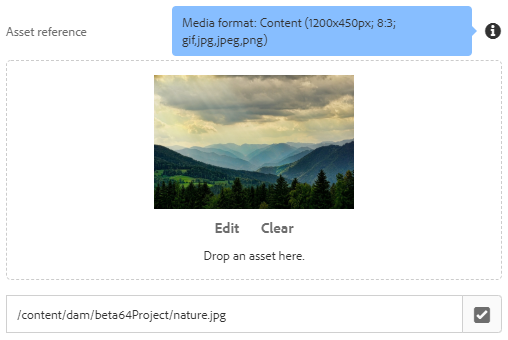
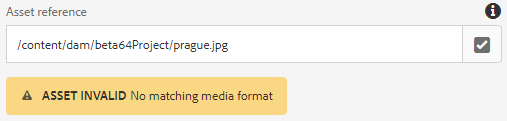
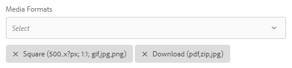

wcm.io
wcm.ioMedia Handler Granite UI components
Please note: These Granite UI components are only supported in AEM 6.3 and higher.
Media Handler-aware File Upload

This is a customized File Upload component that allows to reference AEM assets or upload binary files as inline assets with enhanced support for the wcm.io Media Handler.
"fileReference": {
"sling:resourceType": "wcm-io/handler/media/components/granite/form/fileupload",
"fieldLabel": "Asset reference"
}
Enhancements over AEM version:
- A path field is additionally displayed which shows the references of the selected asset, and allows to browse it directly alternatively to drag & drop from the asset finder. The root path of this path field can be configured with the
rootPathproperty. - The referenced asset is checked automatically against the configured set of media formats. A warning is displayed in the edit dialog when the selected asset does not match with the media formats. The media formats are taken from the component properties, or can be set directly for the edit dialog using the properties
mediaFormats,mediaFormatsMandatoryandmediaCropAuto. - The property
rootPathis automatically set to the default DAM root path in the Media Handler configuration, and defaults to/content/dam. - The properties
name,fileNameParameterandfileReferenceParameterare set automatically to their default values as configured in the Media Handler configuration. They only have to be set on the component if different values should be used for a component (e.g. when multiple asset references are stored for one component). - When the property
fieldDescriptionis not set, it is set automatically with information about the expected media formats - The property
allowUploadis set tofalseby default - The property
mimeTypesis pre-initialized with mimetypes for GIF, JPEG and PNG images
Properties:
name(String) = {default value configured in media handler}
The name that identifies the file upload location. E.g. ./file or ./image/file.fileNameParameter(String) = {default value configured in media handler}
The location for storing the name of the file. E.g. ./fileName or ./image/fileNamefileReferenceParameter(String) = {default value configured in media handler}
The location for storing a DAM file reference. E.g. ./fileReference or ./image/fileReferencenamePrefix(String) = “./”
Prefix for all property names in this component. Can be used to store the properties in another resource by setting e.g. to “./mySubNode/”. Property value is ignored for properties name, fileNameParameter or fileReferenceParameter if those are set explicitly.mimeTypes(String) multiple = [“image/gif”,“image/jpeg”,“image/png”,“image/tiff”,“image/svg+xml”]
The browse and selection filter for file selection. E.g. [“.png”,“.jpg”] or [“image/*”].allowUpload(Boolean) =false
Indicates whether upload from local file system is allowed.fieldDescription(String) = {media format information}
When the field description is not set, it is set automatically with an information about the supported media formats.rootPath(String) = {root path from media handler config}
The path of the root of the pathfield.fallbackRootPath(String) = “/content/dam”
The root path that is used as fallback when no root path could be detected dynamically, e.g. because outside any site or within experience fragments.appendPath(String) = {path appendix}
Appendix path added to the (usually auto-detected) root path.mediaFormats(String[]/String)
List of media formats required by this component. If not set the property value is looked up from component properties or policy.mediaFormatsMandatory(String[]/String)
List of mandatory media formats required by this component. If not set the property value is looked up from component properties or policy.mediaCropAuto(Boolean) =false
Enables “auto-cropping” mode. If not set the property value is looked up from component properties or policy.required(Boolean) =false
Property is mandatory.
Media Handler-aware Path Field

This is a customized Path Field component that allows to reference AEM assets with enhanced support for the wcm.io Media Handler.
"fileReference": {
"sling:resourceType": "wcm-io/handler/media/components/granite/form/pathfield",
"fieldLabel": "Asset reference"
}
This component extends the wcm.io Granite UI components Path Field. Enhancements over this version:
- The referenced asset is checked automatically against the configured set of media formats. A warning is displayed in the edit dialog when the selected asset does not match with the media formats. The media formats are taken from the component properties, or can be set directly for the edit dialog using the properties
mediaFormats,mediaFormatsMandatoryandmediaCropAuto. - The property
rootPathis automatically set to the default DAM root path in the Media Handler configuration, and defaults to/content/dam. - The property
nameis set automatically to it's default value as configured in the Media Handler configuration. They only have to be set on the component if different values should be used for a component (e.g. when multiple asset references are stored for one component). - The property
rootPathdefaults to/content/dam - When the property
fieldDescriptionis not set, it is set automatically with information about the expected media formats
Properties:
name(String) = {default value configured in media handler for media reference}
The name that identifies the file upload location. E.g. ./file or ./image/filenamePrefix(String) = “./”
Prefix for all property names in the this component. Can be used to store the properties in another resource by setting e.g. to “./mySubNode/”. Property value is ignored for property name if this is set explicitly. The path of the root of the pathfield.rootPath(String) = {root path from media handler config}\fallbackRootPath(String) = “/content/dam”
The root path that is used as fallback when no root path could be detected dynamically, e.g. because outside any site or within experience fragments.appendPath(String) = {path appendix}
Appendix path added to the (usually auto-detected) root path.fieldDescription(String) = {media format information}
When the field description is not set, it is set automatically with an information about the supported media formats.mediaFormats(String[]/String)
List of media formats required by this component. If not set the property value is looked up from component properties or policy.mediaFormatsMandatory(String[]/String)
List of mandatory media formats required by this component. If not set the property value is looked up from component properties or policy.mediaCropAuto(Boolean) =false
Enables “auto-cropping” mode. If not set the property value is looked up from component properties or policy.required(Boolean) =false
Property is mandatory.
Media Formats Select Field

Multi-select field that allows to select one or multiple media formats.
"mediaFormats": {
"sling:resourceType": "wcm-io/handler/media/components/granite/form/mediaformatselect",
"name": "./mediaFormats",
"fieldLabel": "Media Formats"
}
Properties:
multiple(Boolean) =true
Media format select is multiple by default